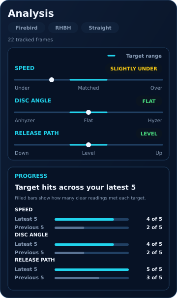
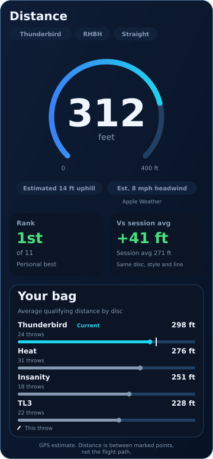
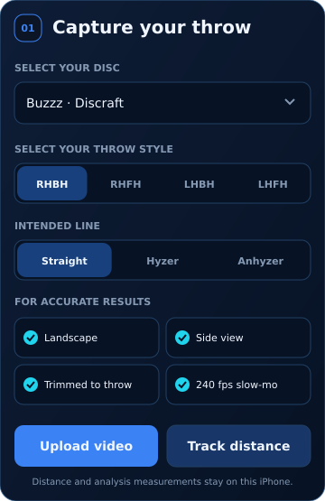
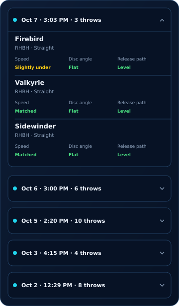
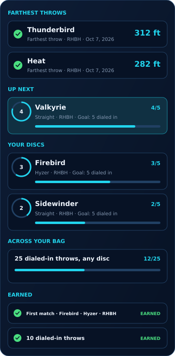
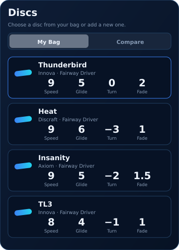
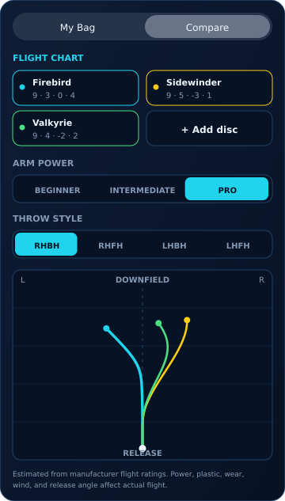
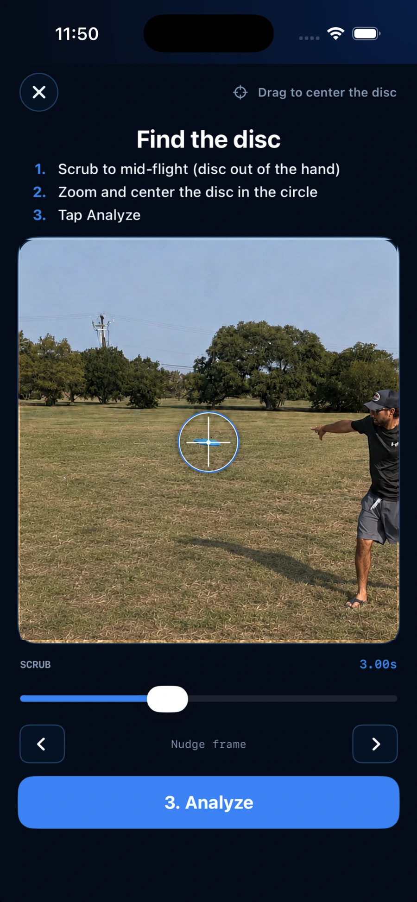
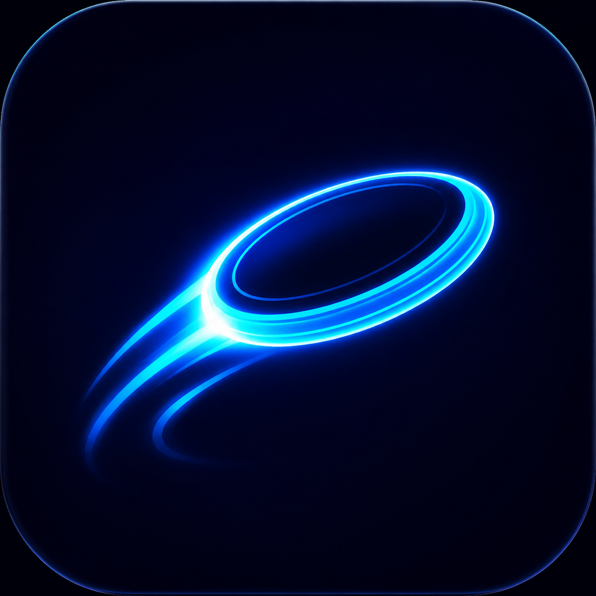

Disc golf analyzer app for iPhone
Analyze your disc’s flight.
Dial in your throw.
Analyze your release from slow-motion video and track your throw distance with GPS. Follow your target hits, distance averages, and recorded bests to see how your practice is paying off.
For iPhone · Available on the App Store
- 5 free throw analyses
- Video stays on your iPhone
- Works in a field or into a net
- No extra hardware


Distance tracking
Track how far your throws go.
Mark where you throw, walk to where the disc stopped, and mark the landing. ThrowLab estimates the distance between those two positions and saves it with your practice session.
Keep your farthest qualifying throw for each disc and throwing style.
Set a goal and see how much farther you have to go.
Compare your latest 5 qualifying throws with the previous 5 for the same disc, style, and line.
Uses GPS, without a video. Measures straight-line distance to the final position, including skips or rolls. GPS quality affects the estimate.
Release analysis
See how your release measures up.
Choose your disc, throwing style, and intended line before you analyze. ThrowLab evaluates speed, disc angle, and release path against the target for that throw.
Relative to the selected disc and throw.
From anhyzer through flat to hyzer.
Downward, flat, or upward in early flight.
Results are relative ratings, not exact miles per hour or degree measurements.


Progress and practice sessions
Turn every practice session into progress you can see.
Throws with the same disc, throwing style, and intended line are tracked together. Throws made in the same practice window are grouped into a session, keeping release results and GPS distance throws from that practice run in one place.
The comparison stays with that disc and line. A different setup starts its own history.
- Sessions form automatically during a practice window
- Targets begin after 5 qualifying throws, then use the latest 10
- Speed, angle, and path keep their own hit rates
Milestones
Reach your goals one matched throw at a time.
A dialed-in throw moves its disc toward the next goal. Firebird has three of five in this example, while the total across the bag is eight.
Goals follow the disc, throwing style, and intended line you used.
Dialed-in throws also count toward your overall milestones.
See earned release milestones and farthest qualifying distances for each disc and throwing style.


Your discs
Analysis that knows every disc in your bag.
Add each disc you throw and ThrowLab remembers its flight numbers, so every analysis is measured against the right disc instead of a generic average.
Every disc you throw, with speed, glide, turn, and fade at a glance.
Choose other discs for a side-by-side flight chart.
Keep the disc you are analyzing close at hand.
Compare discs
Pick the disc with the flight you want.
Put up to four discs on one flight chart. Change arm power or throwing style to see how the estimated paths shift. It is a quick way to look at the discs in your bag side by side.
Each path starts from the same release point.
Start with a disc from your bag, then add others to compare.
The paths come from flight ratings. They are not recordings of your throws.

How it works
One video, four steps, one clear fix.
Set up the throw, record in slow motion, then find the disc and review the result.
Find the disc
- 1. Scrub to mid-flight and pinch to zoom
- 2. Center the disc completely in the circle
- 3. Tap Analyze

- 01
Set the throw
Choose your disc, throwing style, and intended line.
- 02
Record in slow motion
Use a trimmed landscape clip with the full throw visible from the side.
- 03
Find the disc
Move to a clear early-flight frame, center the disc, and tap Analyze.
- 04
Review and repeat
Review the release and progress, then add another throw to the session.
Recording setup
Better footage, a cleaner read.
A few habits make the difference between a clean read and a missed one.
About accuracy: Results are estimates derived from video. Camera position, lighting, framing, blur, frame rate, and disc visibility can affect the result.
Frequently asked questions
What does ThrowLab analyze?
ThrowLab analyzes speed, disc angle, and release path from slow-motion video, and separately tracks throw distance using two GPS marks. Release gauges show relative ratings against target ranges rather than exact miles per hour or degree measurements.
How does distance tracking work?
Mark your throw position, walk to where the disc stopped, and tap Mark landing. ThrowLab estimates straight-line distance between those GPS marks, including skips or rolls. It shows GPS quality and elevation when available. Qualifying throws count toward recorded bests, distance goals, and averages; measurements outside the quality or distance limits can be saved in Sessions without counting toward records or trends.
How does progress tracking work?
Only throws with the same disc, throwing style, and intended line are compared. ThrowLab tracks target hits for speed, disc angle, and release path separately.
How are practice sessions created?
Throws made within the same practice window are grouped automatically. You can have more than one session in a day without using a start or stop button.
What counts toward a milestone?
A dialed-in throw has speed on target, a clear disc-angle reading that matches your line, and a level release path. Goals are tracked by disc, throwing style, and line. Your overall total counts across the bag.
Are Compare flight paths measured from my videos?
No. Compare estimates paths from manufacturer flight ratings. You can overlay up to four discs and choose an arm power tier and throwing style. Actual flight changes with the throw, wind, plastic, and disc wear.
Does it support forehand and left-handed throws?
Yes. ThrowLab supports RHBH, RHFH, LHBH, and LHFH, plus straight, hyzer, and anhyzer intended lines.
Can I use it with a practice net?
Yes, for release analysis. The disc does not need to land on camera. Keep it visible for several frames after release. GPS distance tracking is intended for throws where you can mark the release and final disc positions.
Are my videos uploaded?
No. Throw videos are processed on your iPhone and are not uploaded for analysis. No account is required.
How much does ThrowLab Pro cost?
New users get 5 free video analyses and 5 free saved distance measurements. ThrowLab Pro is then $4.99 per month or $39.99 per year for unlimited analyses and distance measurements.
Practice guides
Get more from your next session.
Set up your recording, understand the result, and follow your progress.
How to record a disc golf throw for analysis
Set up a clear slow-motion video for ThrowLab, including camera position, framing, trimming, and disc visibility.
Read guide →How to read your ThrowLab analysis
Understand speed, disc angle, release path, and target-match progress in ThrowLab.
Read guide →How to track your disc golf practice progress
Use comparable throws and target-match readings to understand your practice progress in ThrowLab.
Read guide →
Available for iPhone
Try it at your next practice.
Start with 5 free video analyses and 5 free distance measurements. Continue with ThrowLab Pro for $4.99/month or $39.99/year.